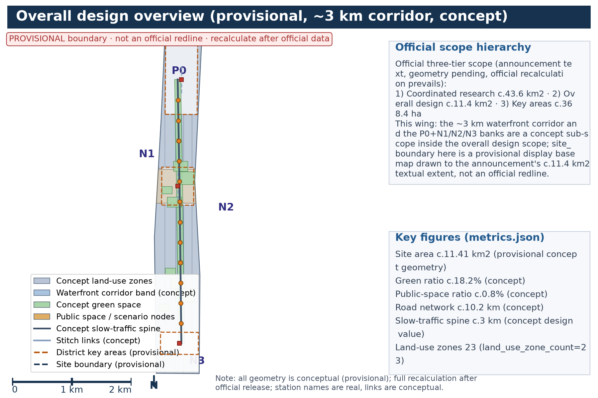
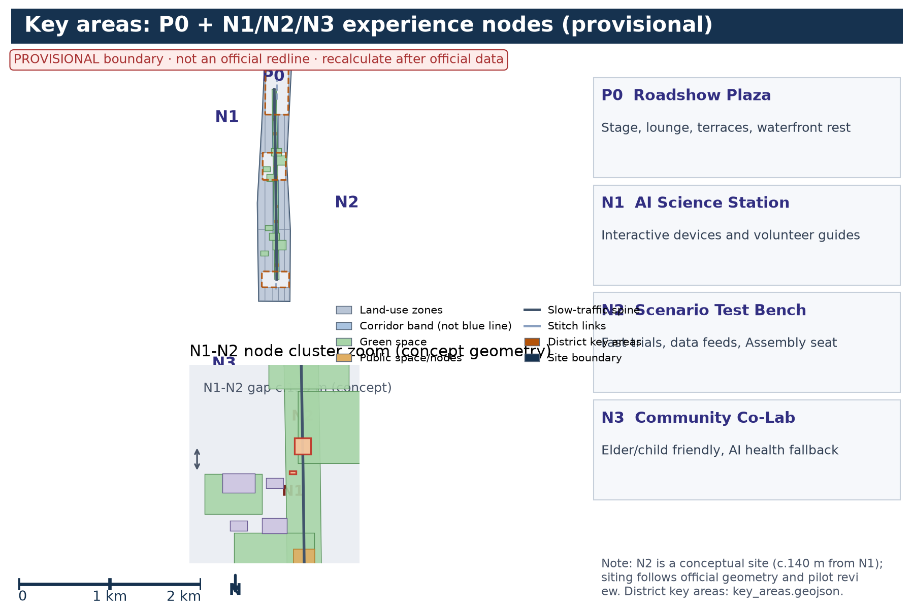
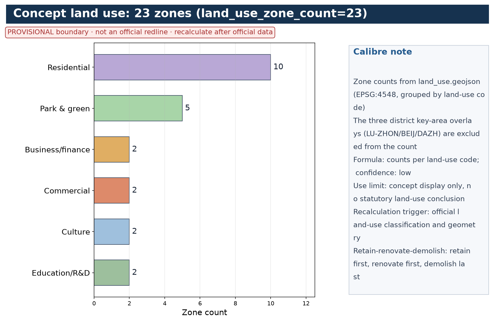
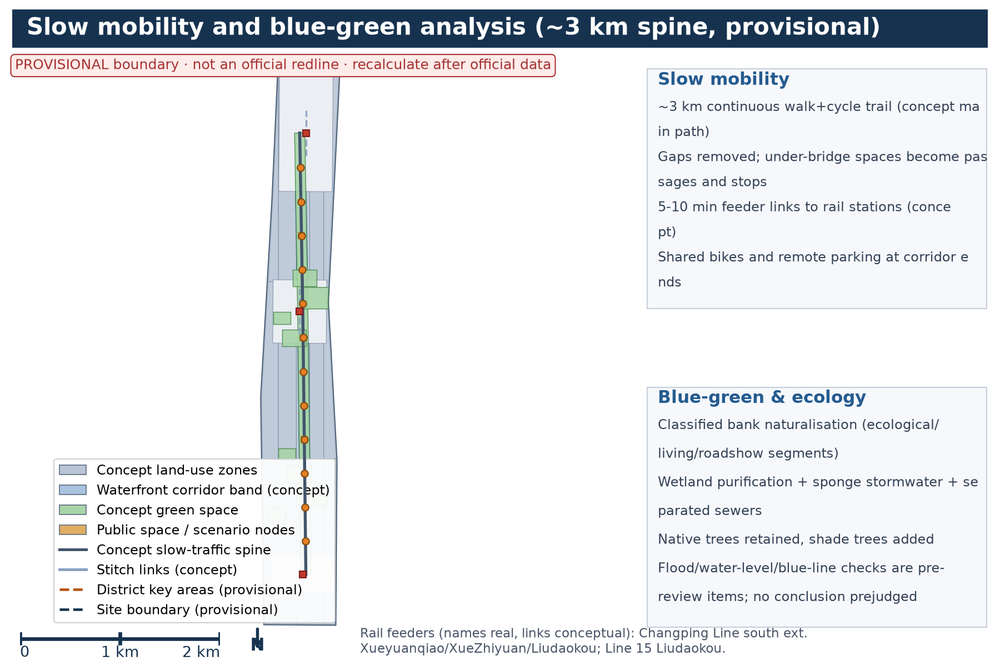
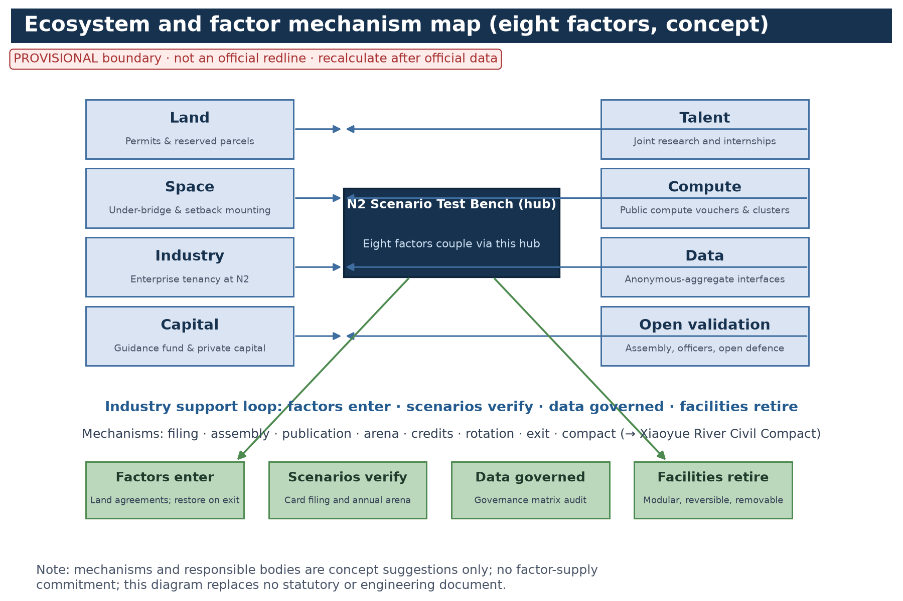

Xiaoyue River AI Scenario Wing: AI Roadshow Corridor & Public Experience Trail Centennial Jingzhang AI Innovation Belt · Haidian · v1.1 · Chinese master name: “小月河场景赋能翼”
PROVISIONAL CONCEPT · Not statutory planning approval · No commitmentOverall Map

Three scope levels: coordinated research — overall design — key areas; structure "one belt, three segments, multiple nodes". Rail station names (Changping Line south extension: Xueyuanqiao/XueZhiyuan/Liudaokou; Line 15: Liudaokou) are real; connections are conceptual. All boundaries are provisional and replaced after official recalculation.
Three-Level Scope
Per the official announcement's textual scope (geometry pending; official recalculation prevails): coordinated research c.43.6 km2, overall design c.11.4 km2, and key areas c.368.4 ha (Zhongzhi Park AI Independent Innovation Accelerator, Beijing AI Origin Community, Dazhongsi AI Industry Cluster). This wing: the ~3 km waterfront corridor is a concept sub-scope inside the overall design scope; the package site_boundary is a provisional display basemap drawn to the announcement's c.11.4 km2 textual extent (not an official redline). All levels share one basemap and coordinate system.
Key Areas

- P0 Roadshow Plaza: stage + lounge + prefab terraces + waterfront rest; modular and reversible.
- N1 AI Science Station: interactive devices and education, near universities and schools.
- N2 Scenario Test Bench: fast-deploy short-run trials with data-feed interfaces; hosts the Riverside Assembly.
- N3 Community Co-Lab: AI health services + elder/child accessibility + offline human-fallback posts.
Node numbering is unified as P0/N1/N2/N3 across text, figures and matrices; the three district-level key areas (Zhongzhi Park, Beijing AI Origin Community, Dazhongsi AI Cluster) are in key_areas.geojson.
Land-Use Zones

concept land-use zones (land_use.geojson, national classification codes); retain-first, renovate-first, demolish-last; the building-by-building list follows surveying.
Slow Mobility

An ~3 km continuous waterfront walking and cycling trail (concept main path), removing gaps and using under-bridge spaces; 5-10 minute feeder links to rail stations; road network totals about m (c.10.15 km, concept).
Blue-Green Public Space
Classified bank naturalisation, wetland purification and sponge facilities; public-space layers "plaza—nodes—paths—pocket spaces"; green ratio c. (18.2%) and public-space ratio c. (0.8%), concept-scale.
Buildings
concept building units (reuse-first envelopes, geometry/buildings.geojson); node buildings c.600-1,200 m², light steel and demountable.
Renewal Projects
Five renewal categories: ecological restoration, waterfront space, building renovation, municipal & smart infrastructure, operation support; phasing in stages (near/mid/long term) with evaluation gates. The pilot implementation matrix (P0/N1/N2/N3) lists current baselines, site admission, pre-review checks, responsible bodies, cost ranges, maintenance frequency, stop-service and removal costs, metric baselines and exit thresholds (concept).
AI Scenarios

Ten scenario cards (S1-S10) plus three industry test-and-validation scenarios (T1-T3): ; scenario nodes and landmarks; three AI governance bottom lines: anonymous aggregation, human review, no excessive surveillance. Developer and enterprise conversion runs through the Developer Community (online collaboration space plus N2 shared workstations, open registration, quarterly co-building, public defence) with human desks and offline windows.
Core Metrics

Task Coverage
Three positionings — five functions — three zones two wings are explicitly answered (three zones: Zhongzhi Park / Beijing AI Origin Community / Dazhongsi AI Cluster; two wings: Zhongguancun Technology Service Wing / Xiaoyue River AI Scenario Wing; the Jingzhang Heritage Vitality Belt is framed only as a culture-space connector, not as one of the two wings); cooperation loops cover Beiwei Community, Future Science City, Huairou Science City, E-town and Jing-Jin-Ji (figure region-cooperation).
| Task | Chapters |
|---|---|
| agent.1 Belt concept and functional coordination | Three-Level Scope Framework; One Belt Coordination and Three Zones Two Wings; Brand and Visual Identity |
| agent.2 Full-stack AI innovation ecosystem | Ecosystem and Factor Mechanism Map; Industry and Future City Research |
| agent.3 AI+ scenario paradigm and AI-vibrant city | AI Innovation Ecosystem, Personas, and AI+ Scenarios; Scenario Card System and Test-and-Validation |
| agent.4 AI public space, new businesses and landmarks | Detailed Design of Key Areas; Culture, Landmarks, Honours and the Developer Pathway |
| agent.5 Jingzhang/Zhongguancun/AI cultural narrative | Brand and Visual Identity; Culture, Landmarks, Honours and the Developer Pathway |
| agent.6 Global AI event system and long-term operation | Annual Event Brand System; Pilot Implementation Matrix; Data Governance Matrix; Developer Community & conversion pathway |
Self-Check Status
Four gates (DETERMINISTIC_VALIDATION / SPATIAL_REVIEW / VISUAL_PACKAGING / PROFESSIONAL_EVIDENCE) pass and are persisted in self_check.json; manifest hashes refreshed.
Sources
Evidence anchors run through the proposal ([source:…]/[metric:…]/[data:…]); sources.json registers 35 entries, including seven global cases (CASE-HIGHLINE…CASE-KALASATAMA), Beijing master plan / Haidian district plan / Xueyuanlu control plan / Xiaoyue River special materials / street statistics / survey and interview entries (REF-*), and a per-asset rights ledger (LEDGER-*: font, logo, figures, geometry, basemap, statistics, survey, HTML/PDF, code, generation tools and brand prior-rights status LEDGER-TRADEMARK-001).
Assumptions
- A-BOUNDARY-001: all geometry is provisional; recalculation after official release.
- A-CONTROLS-001: statutory controls unknown; no numeric conclusions.
- A-DATA-001: hydrological data referenced conceptually only.
- A-DESIGN-001: facilities are original reversible concept suggestions, not commitments.
- A-PRIVACY-001: anonymous aggregation with human review; no individual-identifying collection.
- A-EVENT-001: the event system is suggested design, not confirmed government arrangements.
- A-BRAND-001: no official trademark search completed at the concept stage; all brand names and marks (incl. the Chinese master name) are treated as internal working codenames (LEDGER-TRADEMARK-001), restricted to community display and review in this submission until prior-rights clearance.